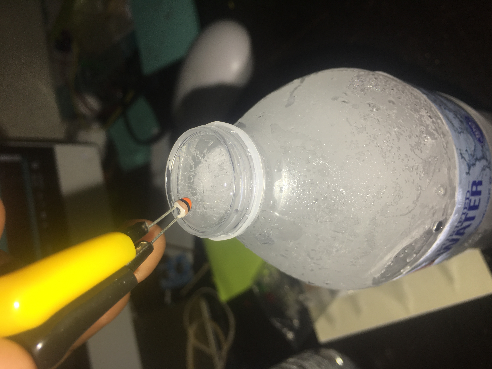

Week 7: Electronic Input Devices
Thermistor
In week 7, our class explored various electron input devices, or sensors. These devices can be utilized to measure physical quantities, such as temperature(thermistor), magnetic fields(hall sensor), and light(phototransistor). For the assignment, we had to use a sensor in the kit to measure said quantities, and then do the same with a self-fabricated sensor. Data had to be shown for both. For the first part of the assignment, I made a thermistor circuit. I modeled it after Dan Bi's circuit, borrowed the code and tested the thermistor on 2 things: hot water and ice. I attached the thermistor to two aligator clips and hooked up the breadboard to my Metro MO expres board, using a 10k ohm resistor in the process. When I first took a crack at it, i had really bizzare results. When I placed the thermistor on ice, i had negative temperatures, but it kept fluctuting. A similar occurence happened when testing the hot water, where most of the temperatures captured were negative. I make some small edits to my circuit, such as putting the resistor and thermistor w/ aligator clips in different places. Soon after, the thermistor made the measurements. Below is the hot water with measurements:

Next, the ice measurements:

Although I had no knowledge about GitHub, I knew a little bit about coding from previous classes in middle school. I started by editing the default page that was set up for me. I followed up by adding logos to the week numbers on the main screen, to give a visual idea of the topics of said weeks. Inserting some of the images was tedious, as some pictures were too large or too small. To overcome this I edited the width and height of the images. Next, I tried to add a color and vibrant background, only for it to have 6 images of the same background all at once, when i only need one. After several frustrating minutes, I decided to make my background a simple blueviolet color for the time being.
PROJECT IDEAS
Mosquito-Killer
My first idea for my final project was a random thought. In our class' 1st breakout room, I noticed a mosquito in my room and started thinking about how they bugged me all summer, especially when I was sleeping. I brainstormed about making something that would zap mosquitos into oblivion, but it seemed impractical and honestly, pretty dangerous.
Bottle-Cap opening robot
This robot would grab a bottle using two claws, and a robotic arm at the top would place a bottle opener on the cap of something similar to a beer bottle to open it. I got the idea from my Dad's cap-opener on his keys and wanted to make a new design and put it on a robot. I took the advice of creating something that makes us lazier people
Wall-Painting Robot
This robot would go up and down walls, painting as it goes up and down. i would attached wires to the robot that are connected to nails on a wall, so that it can pull its self up. To paint the wal, I would add a roller underneath the bot.